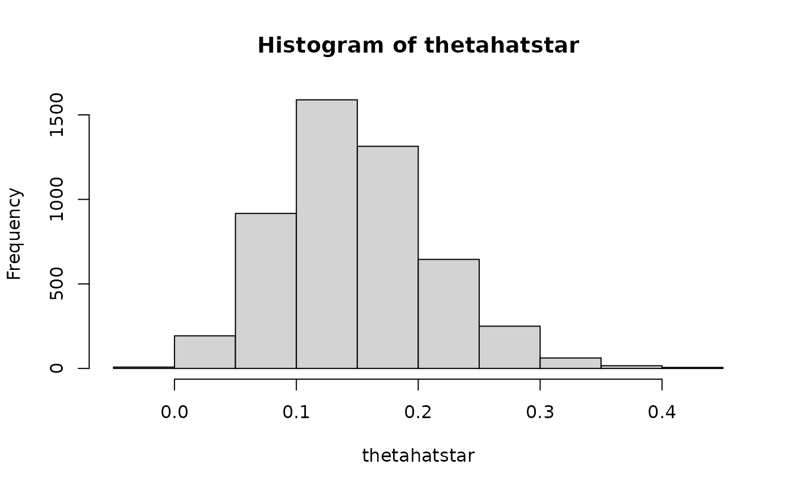

Nonparametric Bootstrapping
nb( data, std = FALSE, B = 200, alphahatbetahat, alpha = c(0.001, 0.01, 0.05), plot = TRUE, par = TRUE, ncores = NULL, blas_threads = TRUE, mc = TRUE, lb = FALSE )
| data |
|
|---|---|
| std | Logical. Standardize the indirect effect \(\hat{\alpha} \hat{\beta} \frac{\sigma_x}{\sigma_y}\). |
| B | Integer. Number of bootstrap samples. |
| alphahatbetahat | Numeric. Estimate of the indirect effect \(\left( \hat{\alpha} \hat{\beta} \right)\). |
| alpha | Numeric vector.
Alpha level.
By default |
| plot | Logical. Plot the sampling distribution of the indirect effect. |
| par | Logical.
If |
| ncores | Integer.
Number of cores to use if |
| blas_threads | Logical.
If |
| mc | Logical.
If |
| lb | Logical.
If |
Other nonparametric functions:
.nb(),
mvn_nb_bcaci_simulation(),
mvn_nb_bcaci_task(),
mvn_nb_bcci_simulation(),
mvn_nb_bcci_task(),
mvn_nb_pcci_simulation(),
mvn_nb_pcci_task(),
mvn_nb_simulation(),
mvn_nb_task(),
mvn_nb(),
mvn_pbmvn_bcaci_simulation(),
mvn_pbmvn_bcaci_task(),
mvn_pbmvn_bcci_simulation(),
mvn_pbmvn_bcci_task(),
mvn_std_nb_bcaci_simulation(),
mvn_std_nb_bcaci_task(),
mvn_std_nb_bcci_simulation(),
mvn_std_nb_bcci_task(),
mvn_std_nb_pcci_simulation(),
mvn_std_nb_pcci_task(),
mvn_std_nb_simulation(),
mvn_std_nb_task(),
mvn_std_nb(),
mvn_std_pbmvn_bcaci_simulation(),
mvn_std_pbmvn_bcaci_task(),
mvn_std_pbmvn_bcci_simulation(),
mvn_std_pbmvn_bcci_task()
data <- jeksterslabRdatarepo::thirst alphahatbetahat <- .fit(data, minimal = TRUE) nb(data = data, B = 5000, alphahatbetahat = alphahatbetahat, par = FALSE)#> est se reps ci_0.05 ci_0.5 ci_2.5 ci_97.5 #> pc 0.1527185 0.0644487 5000 -0.03169942 0.005080342 0.03799035 0.2913907 #> bc 0.1527185 0.0644487 5000 -0.01254807 0.021663269 0.05468327 0.3180668 #> bca 0.1527185 0.0644487 5000 -0.01288558 0.021239536 0.05431857 0.3169551 #> ci_99.5 ci_99.95 zero_hit_99.9 zero_hit_99 zero_hit_95 len_99.9 #> pc 0.3481779 0.3933969 1 0 0 0.4250963 #> bc 0.3655058 0.4383641 1 0 0 0.4509122 #> bca 0.3646804 0.4355117 1 0 0 0.4483973 #> len_99 len_95 shape_99.9 shape_99 shape_95 #> pc 0.3430976 0.2534004 1.305071 1.323909 1.208702 #> bc 0.3438426 0.2633836 1.728393 1.623646 1.686622 #> bca 0.3434408 0.2626365 1.707646 1.612135 1.669072alphahatbetahat <- .fit(data, minimal = TRUE, std = TRUE) nb(data = data, std = TRUE, B = 5000, alphahatbetahat = alphahatbetahat, par = FALSE)#> est se reps ci_0.05 ci_0.5 ci_2.5 ci_97.5 #> pc 0.1530327 0.06369543 5000 -0.014893263 0.01960047 0.04357467 0.2910842 #> bc 0.1530327 0.06369543 5000 0.001672763 0.03008665 0.05587080 0.3182804 #> bca 0.1530327 0.06369543 5000 0.008969743 0.03231459 0.05697618 0.3195475 #> ci_99.5 ci_99.95 zero_hit_99.9 zero_hit_99 zero_hit_95 len_99.9 #> pc 0.3416542 0.4339164 1 0 0 0.4488097 #> bc 0.3825759 0.4445266 0 0 0 0.4428539 #> bca 0.3907462 0.4460073 0 0 0 0.4370375 #> len_99 len_95 shape_99.9 shape_99 shape_95 #> pc 0.3220537 0.2475095 1.672664 1.413612 1.261228 #> bc 0.3524893 0.2624096 1.925833 1.867024 1.700746 #> bca 0.3584316 0.2625713 2.033656 1.969162 1.733508